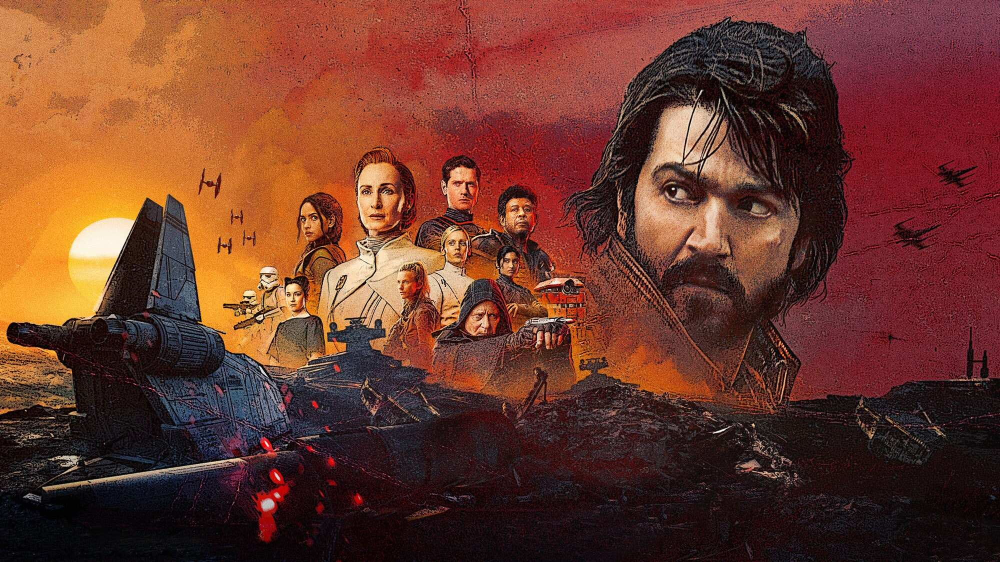
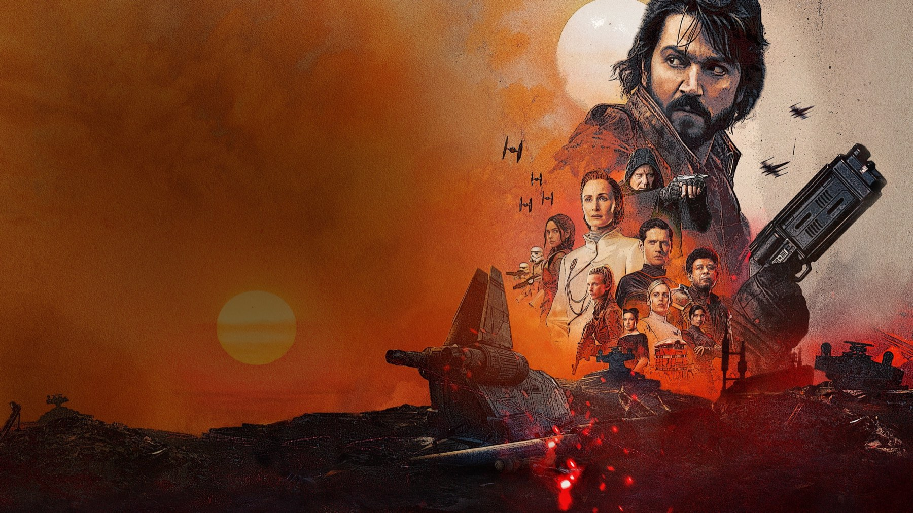

Star Wars: l'ordine cronologico per guardare tutto
Dall'Episodio I a Mandalorian e Grogu: l'ordine interno alla storia, quello di uscita e il percorso che consigliamo
Il primo film di Star Wars è l'Episodio IV. Chi vuole sistemare tutto in fila si scontra subito con questa stranezza: la saga è nata a metà, nel 1977, e per quasi cinquant'anni ha continuato ad allargarsi in tutte le direzioni. Oggi tra film e serie i titoli sono decine, e la domanda «da dove parto?» ha due risposte diverse. Questa guida le riunisce, con l'anno interno alla storia, la data di uscita e il nostro parere su quale strada scegliere.
Come si leggono gli anni: BBY e ABY
Per datare i fatti la saga usa come punto zero la Battaglia di Yavin, lo scontro finale del film del 1977. BBY vuol dire prima di quella battaglia, ABY dopo. Un racconto a 22 BBY avviene ventidue anni prima, uno a 34 ABY trentaquattro anni dopo. Tutte le date qui sotto sono indicative e vengono da una guida cronologica di JustWatch: alcune serie coprono più anni, e per questo trovate degli intervalli.
La cronologia, passo dopo passo
Si apre con la Repubblica, prima dell'Impero. La minaccia fantasma, uscito il 19 maggio 1999, si svolge a 32 BBY. A 22 BBY c'è L'attacco dei cloni, uscito il 16 maggio 2002, e subito dopo parte la serie animata The Clone Wars, che copre gli anni tra 22 e 19 BBY: nata come film animato il 14 agosto 2008 e proseguita in tv dal 3 ottobre 2008 per sette stagioni. Il passaggio si chiude a 19 BBY con La vendetta dei Sith, uscito il 19 maggio 2005. Nello stesso anno interno si colloca The Bad Batch, animata in tre cicli e arrivata il 4 maggio 2021.

Gli anni dell'Impero
Qui la cronologia diventa più affollata. Solo, uscito il 25 maggio 2018, copre gli anni tra 13 e 10 BBY. Poco dopo, a 9 BBY, c'è Obi-Wan Kenobi, debuttata il 27 maggio 2022. Poi Andor, a 5 BBY: il primo ciclo, partito il 21 settembre 2022, racconta un anno; il secondo, dal 22 aprile 2025, ne copre quattro e porta direttamente a Rogue One. L'animazione di Rebels, dal 3 ottobre 2014 per quattro stagioni, copre gli anni tra 5 e 1 BBY. Rogue One, uscito il 16 dicembre 2016, sta a 0 BBY e chiude il cerchio proprio un attimo prima del film del 1977.
La trilogia originale e il dopo
A questo punto la cronologia incontra la sequenza di uscita e le due strade coincidono. L'Episodio IV, al cinema dal 25 maggio 1977, è il punto zero. Il secondo capitolo, arrivato nel maggio 1980, si colloca tre anni dopo; il terzo, del maggio 1983, a quattro. Dopo la caduta dell'Impero vengono le serie dell'era della Nuova Repubblica. The Mandalorian, partita il 12 novembre 2019, occupa i primi due cicli a 9 ABY e il terzo a 11 ABY, e a 9 ABY sta anche The Book of Boba Fett (29 dicembre 2021). Ahsoka, debuttata il 22 agosto 2023, cade intorno ai 9 ABY, e Skeleton Crew, dal 2 dicembre 2024, nella stessa zona. Chiude questo blocco Mandalorian e Grogu, in sala in Italia dal 20 maggio 2026 (negli Stati Uniti il 22), tra 11 e 12 ABY.
I film sequel
Per ultimi, tra 34 e 35 ABY, vengono i tre film sequel, tutti usciti a dicembre: il 2015 con Il risveglio della Forza, il 2017 con Gli ultimi Jedi (entrambi a 34 ABY), il 2019 con il capitolo conclusivo di Skywalker, a 35 ABY. La serie animata Resistance, a 34 ABY, sta nello stesso periodo. Il prossimo titolo, Starfighter, è atteso il 28 maggio 2027.
Il nostro parere: l'ordine cronologico non è il modo di cominciare
Posizione netta della redazione: se non avete mai visto Star Wars, partire dalla cronologia è una pessima porta d'ingresso. La trilogia dei prequel dà per scontate cose che il film del 1977 costruisce con pazienza, e certi colpi di scena (chi è chi, che cosa significano certe frasi) perdono forza se li incontrate al contrario. L'ordine di uscita è stato pensato, anche per caso, come un racconto: scoperta, rilancio, sorpresa. Il cronologico funziona benissimo come secondo giro, quando i personaggi vi sono già cari e volete vedere come si incastrano i pezzi.
Tre percorsi che consigliamo
Per chi comincia: i tre film degli anni Settanta e Ottanta nell'ordine in cui sono usciti, poi i prequel, da La minaccia fantasma in avanti. Per chi ha poco tempo e ama l'azione: la trilogia originale, Rogue One e The Mandalorian. Per chi preferisce le serie: Andor, che oggi è il titolo che consigliamo con meno riserve. È una storia di spie e ribelli scritta per adulti, con due stagioni da 12 episodi ciascuna, creata da Tony Gilroy per Disney+, e si capisce benissimo anche senza essere appassionati della saga.
Dove vedere tutto in Italia
Le serie live-action recenti, a partire da Andor, sono in streaming su Disney+. Per i singoli film conviene controllare la disponibilità sulla piattaforma il giorno in cui decidete di guardarli, perché i cataloghi cambiano.
Si comincia dall'ordine di uscita, si ricomincia in ordine cronologico. Andor, tra le serie, è la porta migliore per chi non vuole sentirsi in debito con quarant'anni di storia.
Domande frequenti
Qual è l'ordine cronologico di Star Wars?
Si parte da La minaccia fantasma (32 BBY), poi L'attacco dei cloni, The Clone Wars e La vendetta dei Sith (19 BBY). Seguono The Bad Batch, Solo, Obi-Wan Kenobi, Andor, Rebels, Rogue One, la trilogia originale, le serie dell'era della Nuova Repubblica e infine i film sequel.
Da dove si comincia a guardare Star Wars?
Se non avete mai visto nulla, dall'ordine di uscita: Episodio IV, V e VI. L'ordine cronologico funziona meglio come secondo giro, quando conoscete già i personaggi.
Che cosa significano BBY e ABY?
Sono gli anni prima e dopo la Battaglia di Yavin, lo scontro che chiude il film del 1977. Un fatto a 5 BBY avviene cinque anni prima, uno a 11 ABY undici anni dopo.
Andor va visto prima di Rogue One?
Non è obbligatorio, ma la serie racconta i cinque anni che portano a Rogue One: dopo il film, molte scene prendono un altro peso. In Italia è su Disney+.